마이데이터 모바일 애플리케이션 접근성 1차 심사 결과 조치 가이드
- 접근성 1차 심사 결과를 기준으로 작성된 항목입니다.
검사 항목별 평가
보고서 : (MA심사)_NH스마트뱅킹 마이데이터(농협은행)_for_Android(v.4.1.6)_PHONE_1st.pdf
(MA심사)_NH스마트뱅킹 마이데이터(농협은행)_for_iOS(v.2.2.7)_PHONE_1st.pdf
주석명 : [MD2601_005] NH스마트뱅킹 마이데이터 앱접근성 대응
| 번호 | 지침 | 화면경로 | 페이지 | 오류항목 | 오류내용 | 퍼블파일 | 개발파일 | 작업내용 |
|---|---|---|---|---|---|---|---|---|
| 초점 이동 | 2.2 '전체' 항목별 주요 오류 | 공통 | 사용자 인터페이스는 초점이 적용되고, 논리적인 순서로 이동돼야 한다. |
- 해당 컨트롤은 탭이 아닌 웹의 바로가기 링크와 같은 역할의 링크 입니다. 그러나 링크 기능 실행 시 초점이 스크롤된 2댑스 메뉴로 이동하지 않고 현재 링크에 유지되어 부적절합니다. * 기능 실행 시 스크롤된 콘텐츠 영역의 첫번째 요소로 스크린리더 초점이 이동되도록 구현해야 합니다. 스크린리더로 우측 메뉴 영역(2뎁스 메뉴)을 순차 탐색 방법으로 탐색 시 좌측의 1뎁스 메뉴가 정상적으로 화면에 표시되지 않아 이후 1뎁스 메뉴를 임의탐색할 수 없습니다. * 2뎁스 메뉴에서 순차 탐색으로 스크롤 발생 시 좌측의 1뎁스 메뉴가 정상적으로 표시되도록 수정해야 합니다. ※ 스크롤 제스처로 탐색 시에는 정상적으로 표시됩니다. 이와 같이 표시되도록 수정해야 합니다. |
MSCO9280 | - | 작업 완료 | |
|
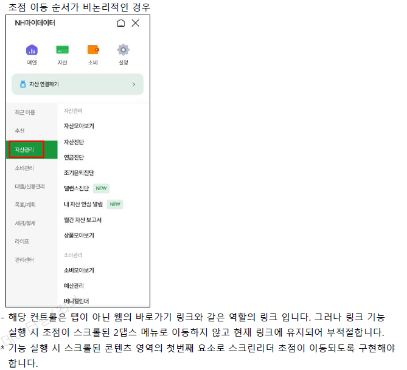
|
||||||||
| 명도 대비 | 3.2 '자산 모아보기' 항목별 주요 오류 | 공통 | (명도 대비) 모든 콘텐츠는 전경색과 배경색이 구분될 수 있도록 제공돼야 한다 |
- 콘텐츠의 명도 대비가 3:1 미만으로 제공되어 부적절 합니다. * 3:1 이상으로 제공될 수 있도록 수정되어야 합니다. |
MSASM000 | - | 작업 완료 | |
|
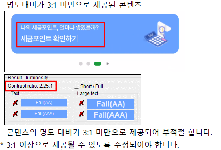 --blue-500:#5181E1; 색상값을 추가하여 --blue-300 -> --blue-500 으로 변경 |
||||||||
| 초점 이동 | 3.2 '자산 모아보기' 항목별 주요 오류 | 공통 | (초점 이동) 사용자 인터페이스는 초점이 적용되고, 논리적인 순서로 이동돼쟈 한다. | - 스크린리더 임의/순차 탐색시 배너 콘텐츠에 접근할 수 없어 부적절 합니다. | MSASM000 | - | 작업 완료 | |
|
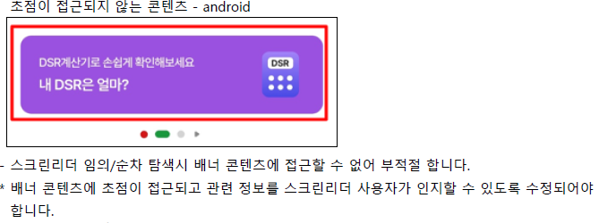 role="button" 추가 |
||||||||
| 대체 텍스트 | 3.2 '자산 모아보기' 항목별 주요 오류 | IOS | (대체 텍스트)텍스트 아닌 콘텐츠는 대체 가능한 텍스트를 함께 제공해야 한다. |
- 해당 콘텐츠에 대체 텍스트가 제공되지 않아 부적절 합니다. * '상승' 등 과 같은 적절한 대체 텍스트를 제공해야 합니다. |
MSASM000 | - | 작업 완료 | |
|
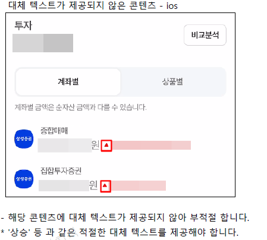
|
||||||||
| 상태 제공 | 5.2 '자산 연결(연결기관 선택하기)' 항목별 주요 오류 | 공통 | (상태 제공) 사용자 인터페이스는 보조 기술을 이용하여 사용할 수 있어야 한다. |
- 해당 컨트롤에 상태정보가 제공되지 않아 부적절 합니다. ※ '선택됨' 등 과 같은 상태정보를 제공하여 스크린리더 사용자가 인지할 수 있도록 수정되어야 합니다. |
MSPS3110 MSPS3120 MSPS3120_1 | - | 작업 완료 | |
|
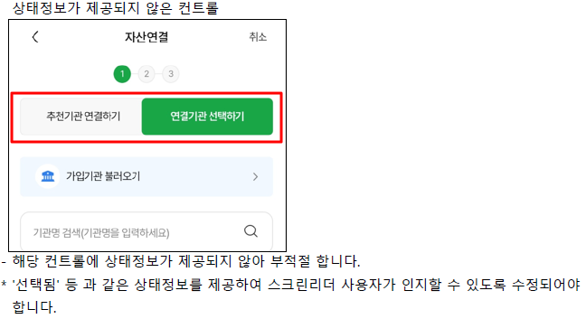
|
||||||||
| 초점 이동 | 5.2 '자산 연결(연결기관 선택하기)' 항목별 주요 오류 | IOS | (초점 이동)사용자 인터페이스는 초점이 적용되고, 논리적인 순서로 이동돼야 한다. |
- '최상단으로 이동' 버튼 실행 후 순차탐색시 초점이 스크롤막대로 이동되어 이후 순차탐색으로 내부 콘텐츠를 탐색할 수 없습니다. * '최상단으로 이동' 버튼 실행 후 순차탐색시 화면 최상단 콘텐츠로 초점이 이동 될 수 있도록 수정되어야 합니다. |
MSPS3120 MSPS3120_1 | - | 작업 완료 | |
|
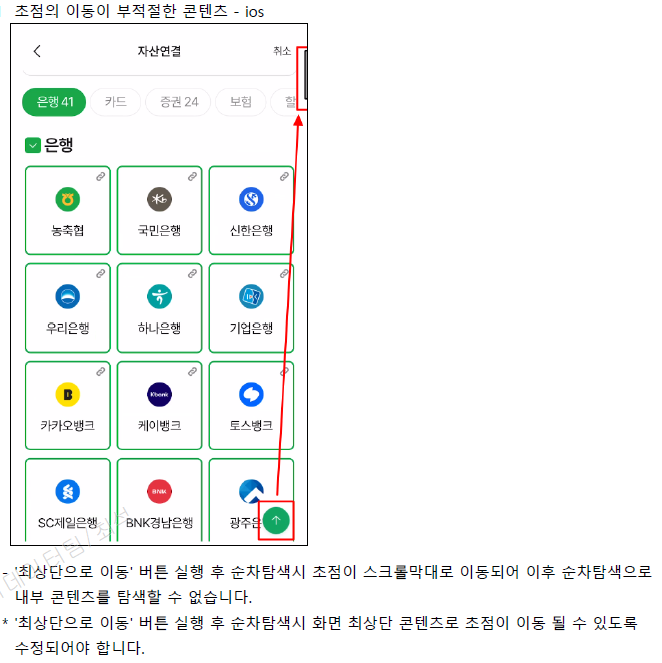
|
||||||||
| 상태 정보 | 5.2 '자산 연결(연결기관 선택하기)' 항목별 주요 오류 | IOS | (상태 정보)상태정보가 부적절한 컨트롤 |
- 전체선택 후 하위 콘텐츠에 초점 접근시 '선택안됨'으로 정보가 제공되어 부적절 합니다. * 전체선택 후에도 상태정보가 적절히 변경될 수 있도록 수정되어야 합니다. ※ 관련 콘텐츠 공통 오류입니다. |
MSPS3120 MSPS3120_1 | - | 작업 완료 | |
|
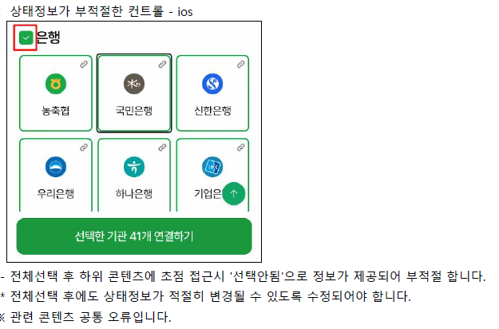 은행, 카드 등 업권 전체 선택 체크 시 기관별 aria-checked="true" 로 적용이 필요합니다. |
||||||||
| 대체 텍스트 | 6.2 '인증방식 선택' 항목별 주요 오류 | 공통 | (대체 텍스트)텍스트 아닌 콘텐츠는 대체 가능한 텍스트를 함께 제공해야 한다. |
- 해당 영역의 대체 텍스트가 '약관보기'로 간략히 제공되어 부적절 합니다. * '[필수]인증서 본인확인서비스 이용약관 보기' 등과 같이 어떠한 약관과 관련된 컨트롤인지 스크린리더 사용자가 인지할 수 있도록 수정되어야 합니다. |
MSPS3C01P | - | 작업 완료 | |
|
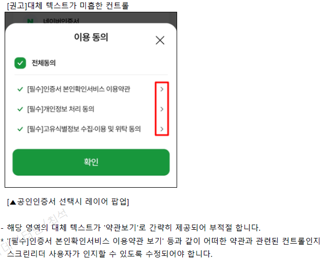 대체 텍스트 수정 |
||||||||
| 색에 무관한 인식 | 6.2 '인증방식 선택' 항목별 주요 오류 | 공통 | (색에 무관한 인식)모든 정보는 색에 관계없이 인식될 수 있어야 한다. |
- '체크박스' 의 선택여부가 색으로만 구분되어 부적절 합니다. * 색상 뿐만 아니라 다른 시각정보(두께, 밑줄, 크기, 테두리 등)로 구분할 수 있도록 변경해야 합니다. |
MSPS3C01P | - | 작업 완료 | |
|
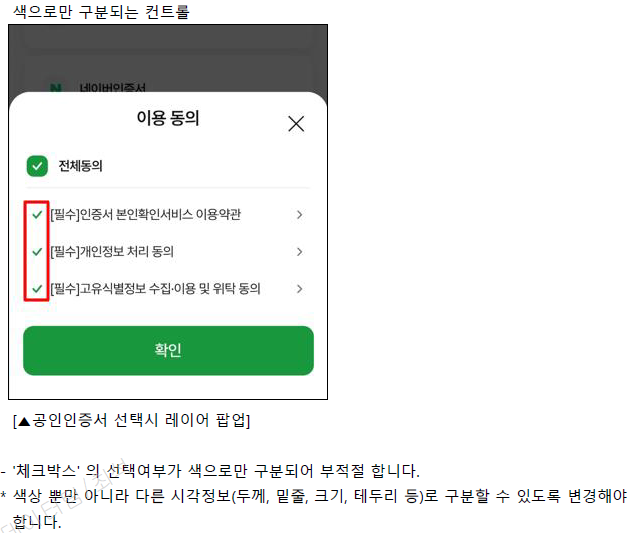 |
||||||||
| 초점 이동 | 6.2 '인증방식 선택' 항목별 주요 오류 | 공통 | (초점 이동)사용자 인터페이스는 초점이 적용되고, 논리적인 순서로 이동돼야 한다. |
- '이용 동의' 레이어 팝업 활성화시 초점이 팝업창 내부로 이동되지 않고 그대로 머물러 있어 스크린리더 순차탐색시 딤드된 영역을 모두 탐색 후 초점이 팝업창으로 이동되어 부적절 합니다. * 딤드된 영역에 초점이 이동되지 않도록 WAI-ARIA의 aria-hidden="true"를 적용하여 수정할 수 있습니다. |
MSPS3C01P | - | 작업 완료 | |
|
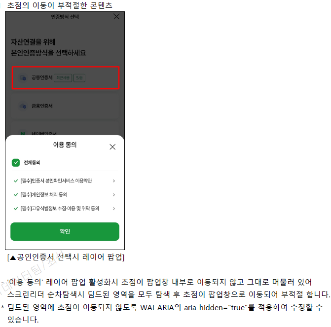 dim에 aria-hidden="true" 추가 |
||||||||
| 상태 제공 | 11.2 '내 자산 안심 알림서비스' 항목별 주요 오류 | 공통 | (상태 제공)사용자 인터페이스는 보조 기술을 이용하여 사용할 수 있어야 한다. |
- 선택된 콘텐츠에 상태정보가 제공되지 않아 부적절 합니다. * '선택됨' 등 과 같은 상태정보가 제공될 수 있도록 수정되어야 합니다. |
MSAEe210P | - | 작업 완료 | |
|
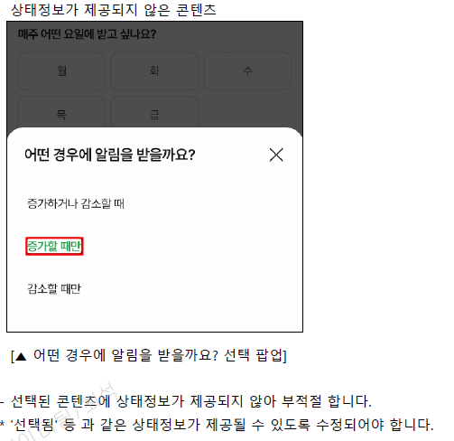
|
||||||||
| 대체텍스트 | 12.2 '상품 모아보기' 항목별 주요 오류 | 공통 | (대체 텍스트)텍스트 아닌 콘텐츠는 대체 가능한 텍스트를 함께 제공해야 한다. |
- 해당 영역의 대체 텍스트가 제공 되었으나 일부 부적절한 내용이 제공 되었습니다. * 화면에 보여지는 내용과 동등한 내용의 정보가 제공될 수 있도록 수정되어야 합니다. |
MSHT4200 | - | 작업 완료 | |
|
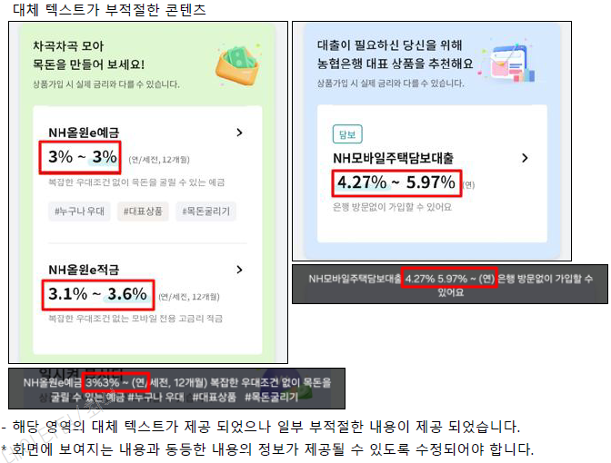
|
||||||||
| 초점 이동 | 12.2 '상품 모아보기' 항목별 주요 오류 | IOS | (초점 이동)사용자 인터페이스는 초점이 적용되고, 논리적인 순서로 이동돼야 한다. |
- 스크린리더 순차 탐색시 초점의 이동순서가 1>2>3 순으로 이동되어 부적절 합니다. * 1>3>2 순으로 이동될 수 있도록 수정 되어야 합니다. - 스크린리더 순차 탐색시 화살표 방향으로 초점이 이동되어 부적절 합니다. * 초점이 논리적인 순서에 따라 이동될 수 있도록 수정되어야 합니다. |
MSHT4200 | - | 작업 완료 | |
|
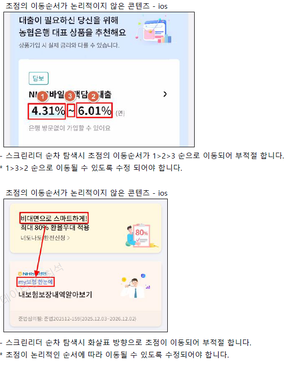
|
||||||||
| 상태 정보 | 14.2 '머니 캘린더' 항목별 주요 오류 | 공통 | (상태 정보)사용자 인터페이스는 보조 기술을 이용하여 사용할 수 있어야 한다. |
- 비활성화된 달력 콘텐츠에 관련 상태 정보가 제공되지 않아 부적절 합니다. * aria-disabled 속성을 이용하여 비활성화된 상태 정보를 제공해야 합니다. |
MSCS2100 | - | 작업 완료 | |
|
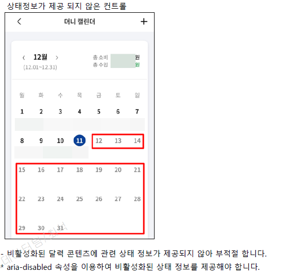 내역이 없는 날 : aria-disabled="true" |
||||||||
| 대체 텍스트 | 15.2 '소비패턴' 항목별 주요 오류 | 공통 | (대체 텍스트)텍스트 아닌 콘텐츠는 대체 가능한 텍스트를 함께 제공해야 한다. |
- 그래프 콘텐츠에 대체 텍스트가 제공되지 않았습니다. * 그래프의 의미를 스크린리더 사용자가 알 수 있는 적절한 대체 텍스트가 제공되어야 합니다. 그래프가 표시되는 영역의 요소에 role="img" 로 이미지 역할을 정의하고 aria-label 속성값에 그래프와 동등한 내용의 대체 텍스트를 제공하면 됩니다. 예) div role="img" aria-label="7월 사용 금액 …"/div |
MSCS3200 | - | 작업 완료 | |
|
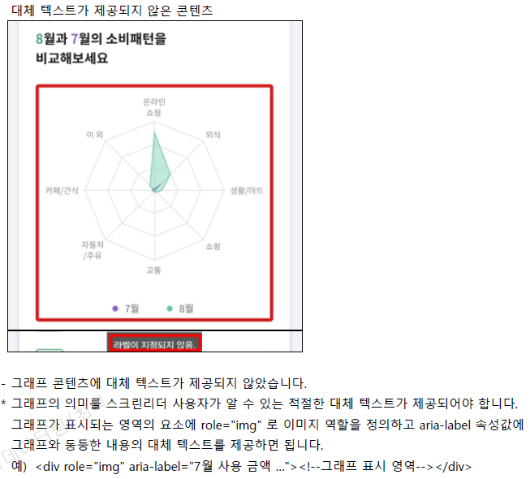
개발 차트 불러올 때 aria-label에 |
||||||||
| 명도 대비 | 16.2 '신용관리' 항목별 주요 오류 | 공통 | (명도 대비)모든 콘텐츠는 전경색과 배경색이 구분될 수 있도록 제공돼야 한다. |
- 캡쳐된 이미지에 표시된 콘텐츠의 명도대비가 기준 3:1 미만입니다. * 전경색과 배경색 명도대비가 3:1 이상되도록 수정해야 합니다. |
MSAEb200 | - | 작업 완료 | |
|
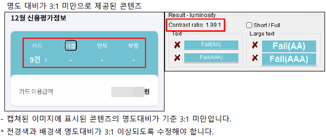 class="v2" 를 추가하여 v2일 경우에 색상 변경 |
||||||||
| 대체 텍스트, 명도 대비 | 20.2 '금융플래너' 항목별 주요 오류 | 공통 |
(대체 텍스트)텍스트 아닌 콘텐츠는 대체 가능한 텍스트를 함께 제공해야 한다. (명도 대비)모든 콘텐츠는 전경색과 배경색이 구분될 수 있도록 제공돼야 한다. |
이미지 및 대체 텍스트 관리자페이지에서 관리 | MSFP2000 | - | 운영 적용 | |
|
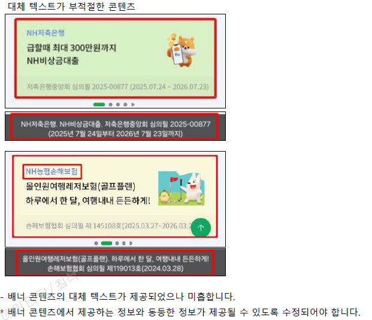
- 배너 콘텐츠의 대체 텍스트가 제공되었으나 미흡합니다. |
||||||||
| 초점 이동 | 20.2 '금융플래너' 항목별 주요 오류 | 공통 | (초점 이동)사용자 인터페이스는 초점이 적용되고, 논리적인 순서로 이동돼야 한다. |
- 스크린리더 순차 탐색시 보이지 않는 영역에 초점이 접근되어 부적절 합니다. * 불필요한 영역에 초점이 접근되지 않도록 수정되어야 합니다. |
MSFP2000 | - | 작업 완료 | |
|
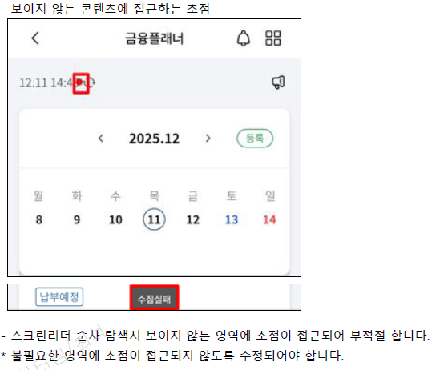
|
||||||||
| 대체 텍스트 | 21.2 'NH주택청약 플래너' 항목별 주요 오류 | 공통 | (대체 텍스트)텍스트 아닌 콘텐츠는 대체 가능한 텍스트를 함께 제공해야 한다. |
- 해당 그래프 영역에 대체 텍스트가 제공되지 않아 부적절 합니다. * 스크린리더 사용자가 내용을 파악할 수 있는 적절한 대체 텍스트를 제공하거나 꾸밈 이미지 일 경우 초점이 접근되지 않도록 수정되어야 합니다. |
MSAE7100 | - | 작업 완료 | |
|
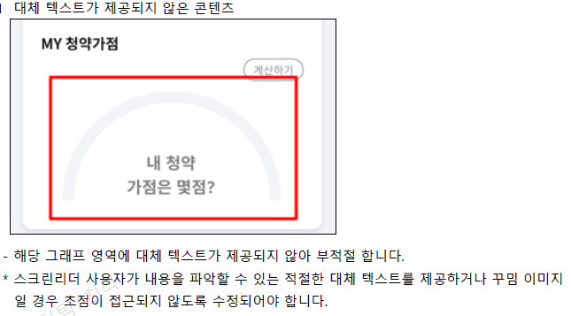
|
||||||||
| 초점 이동 | 21.2 'NH주택청약 플래너' 항목별 주요 오류 | 공통 | (초점 이동)사용자 인터페이스는 초점이 적용되고, 논리적인 순서로 이동돼야 한다. |
- 은행 아이콘 영역에 초점이 접근되지 않아 부적절 합니다. * 해당 영역에 초점이 접근되고 관련 정보가 제공될 수 있도로 수정되어야 합니다. |
MSAE7100 | - | 작업 완료 | |
|
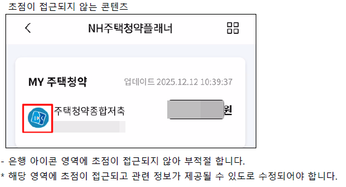
|
||||||||
| 입력 도움 | 21.2 'NH주택청약 플래너' 항목별 주요 오류 | 공통 | (입력 도움)입력서식은 입력 오류를 방지하거나 정정할 수 있어야 한다. |
- 해당 컨트롤에 레이블이 제공되지 않아 사용자가 기능의 목적을 알 수 없습니다. * 컨트롤의 목적을 알 수 있는 적절한 레이블이 제공되어야 합니다. |
MSAE7100 | - | 작업 완료 | |
|
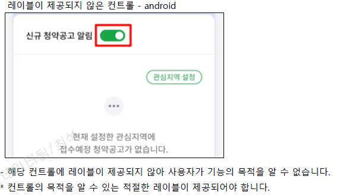 aria-label="신규 청약공고 알림 토글" 추가 |
||||||||
| 입력 도움 | 22.2 '종합소득세' 항목별 주요 오류 | 공통 | (입력 도움)입력서식은 입력 오류를 방지하거나 정정할 수 있어야 한다. |
- '원천징수세액' 입력서식의 레이블이 '필요경비'로 제공되어 부적절 합니다. * 입력서식에 적합한 레이블이 제공될 수 있도록 수정되어야 합니다. |
MSAE8100 | - | 작업 완료 | |
|
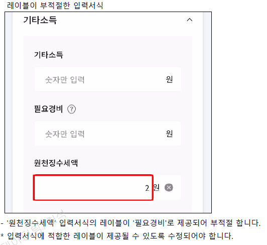
퍼블 소스 상으로는 제대로 되어있습니다. |
||||||||
| 명도 대비 | 27.2 'NH트렌드+' 항목별 주요 오류 | 공통 | (명도 대비)모든 콘텐츠는 전경색과 배경색이 구분될 수 있도록 제공돼야 한다. |
- 캡쳐된 이미지에 표시된 콘텐츠 및 컨트롤의 명도대비가 기준 3:1 미만입니다. * 전경색과 배경색 명도대비가 3:1 이상되도록 수정해야 합니다. |
MSTD9200 | - | 작업 완료 | |
|
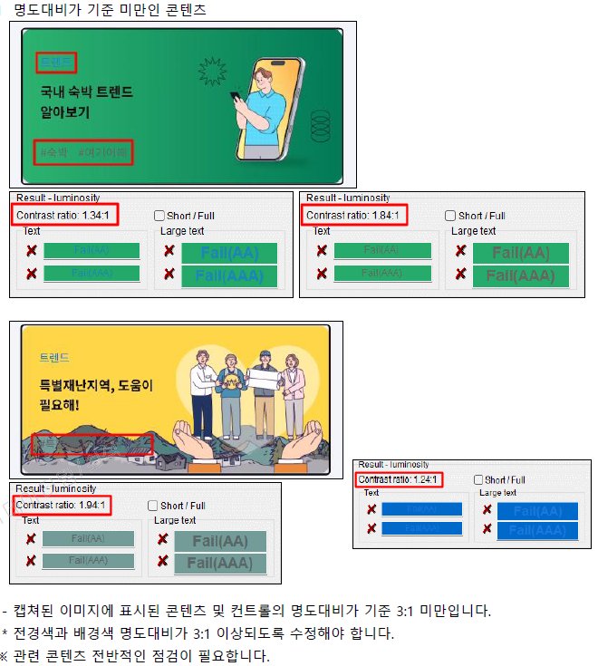 디자인 스타일 변경 |
||||||||